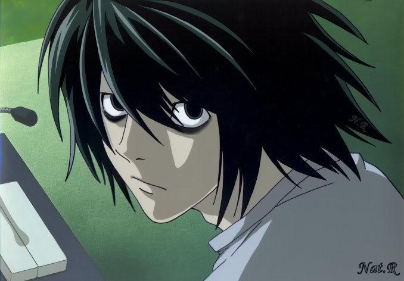

Elle Lawliet
Inicio
Biografía
Serie
Capitulos
L

Nombre de nacimiento:
Elle Lawliet
Fecha de nacimiento:
31 de Octubre de 1979
Lugar de nacimiento:
Japon
Ocupación:
Detective
Enemigo:
Yagami Light
Primer aparicion en la serie:
Episodio 2
Muerte:
5 de Noviembre de 2004 (2007 en el anime)